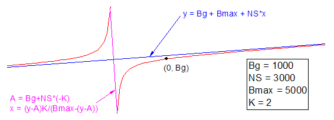

OneSiteTotal-FitFunc
総結合量のみをフィットします。

パラメータ数: 4
パラメータ名: Bg, NS, Bmax, K
意味： Bg = リガンドを添加せずに測定した結合量、NS = 勾配、Bmax = 最大結合量、K = 平衡解離定数
下側境界: なし
上側境界: なし
nlf_OneSiteTotalDepletion(x,V,SA,KdnM,NS,Bmax)
OneSiteTotal.fdf
Binding